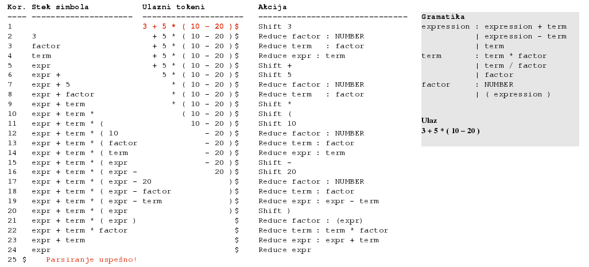
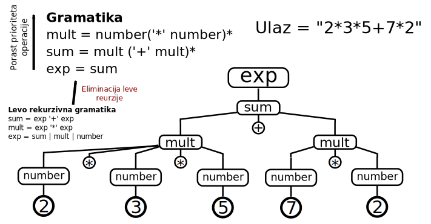

Tekstualne sintakse
Jezici specifični za domen


Fakultet tehničkih nauka u Novom Sadu
Katedra za informatiku
Sadržaj
- Parsiranje
- Formalne gramatike
- Strategije parsiranja
Parsiranje
Parsiranje - sintaksna analiza
- Analiza linearnog zapisa niza simbola na osnovu pravila neke formalne gramatike jezika.
- Transformacija ulaznog stringa u stablo parsiranja.
Leksička analiza
- Svaki jezik poseduje alfabet mogućih karaktera koji se mogu pojaviti u sklopu validnih rečenica. Kod računarskih jezika određene kombinacije simbola se tretiraju kao jedinstveni entitet - token 1.
- Proces grupisanja niza uzastopnih karaktera ulaznog stringa u tokene. Tekstualni blok koji odgovara tokenu naziva se još i leksema.
- Program koji vrši leksičku analizu naziva se lekser, skener ili tokenizator.
- Leksička analiza prethodi procesu parsiranja tako što se karakteri sa ulaza prvo grupišu u tokene a zatim parser vrši sintaksnu analizu i kreira stablo parsiranja.
- Skeneri mogu biti posebni alati a mogu biti integrisani u parser (scannerless parsing).
- Poznatiji skeneri: flex i lex, JLex...
Stablo parsiranja
- Nastaje iz niske simbola (ulaznog stringa) procesom skeniranja (tokenizacije ili leksičke analize) i parsiranja.
- Listovi stabla su tokeni prepoznati od strane skenera (terminali) dok su čvorovi grananja (neterminali) definisani gramatikom jezika.
- Stablo parsiranja reflektuje sintaksnu strukturu ulaznog stringa na bazi unapred definisane formalne gramatike.
Stablo parsiranja - primer
Stablo parsiranja za ulazni string -(4-1)*5/(2+4.67)
Stablo apstraktne sintakse
- Svaki iskaz na datom jeziku se može na apstraktan način opisati stablom apstraktne sintakse (Abstract Syntax Tree).
- AST je usmereno labelirano stablo gde čvorovi stabla predstavljaju instance koncepata apstraktne sintakse.
Primer stabla apstraktne sintakse
-(4-1)*5/(2+4.67)
Razlike između stabla apstraktne i konkretne sintakse
- Stablo konkretne sintakse je bazirano na formalnoj gramatici koja opisuje detalje zapisa u tekstualnom obliku.
- Stablo apstraktne sintakse sadrži suštinu jezičkog iskaza.
- Možemo imati više gramatika za isti jezik odnosno jedno stablo apstraktne sintakse možemo zapisati na više različitih načina što rezultuje različitim stablima konkretne sintakse.
- Primer: Izraz -(4-1)*5/(2+4.67) možemo u postfiksnoj notaciji zapisati kao 4 1 - 5 * 2 4.67 + / -. Ovo će rezultovati različitim stablima parsiranja ali je suština izraza ista i može rezultovati istim stablom apstraktne sintakse.
Graf apstraktne semantike
- Često ulazi fajl opisuje strukturu koja je u opštem slučaju tipa grafa.
- Ovakvu strukturu nazivamo grafom apstraktne semantike (ASG - Abstract Semantic Graph)
Formalne gramatike
Formalna gramatika
- predstavlja skup pravila (produkcije) pomoću kojih je moguće generisati sve validne rečenice nekog jezika (formalni jezik) polazeći od startnog simbola.
- Definiše koji od svih mogućih nizova simbola u jeziku predstavljaju validne rečenice tog jezika (ali bez validnosti njihovih značenja).
- Generisanje ispravnih rečenica jezika (generativne gramatike) - često se koriste kao osnova za prepoznavanje validnih rečenica.
Formalna gramatika - definicija
Formalna gramatika je G = (N, Σ, P, S) gde je:
- N - konačni skup neterminalnih simbola,
- Σ - konačni skup terminalnih simbola,
- P - konačni skup produkcionih pravila (produkcija) oblika:
(Σ ∪ N)∗ N(Σ ∪ N)∗ → (Σ ∪ N)∗
- S - neterminal iz skupa N (S ∈ N) koga nazivamo početnim simbolom.
Klasifikacija formalnih gramatika po Čomskom
Formalne gramatike se mogu klasifikovati prema hijerarhijskoj klasifikaciji Noama Čomskog1. Prema ovoj klasifikaciji gramatike mogu biti:
- tipa 3 - rekurzivno prebrojive - bez ograničenja na oblik produkcija.
- tipa 2 - kontekstno zavisne - produkcije oblika: αAβ → αγβ
- tipa 1 - kontekstno slobodne - produkcije oblika: A → γ
- tipa 0 - regularne - produkcije oblika: A → a, A → aB
Konteksno slobodne gramatike (Context-Free Grammars - CFGs)
- Produkcije oblika: A → γ
- Popularne u domenu računarskih jezika. Dovoljno jednostavne za konstrukciju efikasnih algoritama za parsiranje.
- Generišu jezike koje nazivamo kontekstno slobodnim jezicima.
- Earley parser - algoritam za parsiranje koji prihvata ceo skup CFG. U praksi se češće koriste jednostavniji algoritmi koji prihvataju samo podskup CFG.
- Jezik za definisanje CFG - (Extended) Backus-Naur Form (EBNF).
Primer kontekstno slobodne gramatike
G = ({S}, {a, b}, P, S)
S → aSa
S → bSb
S → ε
Izvođenje - derivacija (Derivation)
- Generisanje ispravne rečenice, počevši od startnog simbola/neterminala, sukcesivnom primenom produkcija dok ne dobijemo rečenicu koja se sastoji samo od terminala.
S → aSa (1)
S → bSb (2)
S → ε (3)
S (1)→ aSa (1)→ aaSaa (2)→ aabSbaa (3)→ aabbaa
Primer izvođenja - alebarski izrazi
Cilj: ( x + y ) * x - z * y / ( x + x )
1. S → x
2. S → y
3. S → z
4. S → S + S
5. S → S - S
6. S → S * S
7. S → S / S
8. S → ( S )
S (startni simbol)
→ S - S (pravilo 5)
→ S * S - S (pravilo 6, primenjeno na levi neterminal S)
→ S * S - S / S (pravilo 7, primenjeno na desni neterminal S)
→ ( S ) * S - S / S (pravilo 8, primenjeno na levi S)
→ ( S ) * S - S / ( S ) (pravilo 8, primenjeno na desni S)
→ ( S + S ) * S - S / ( S ) (itd.)
→ ( S + S ) * S - S * S / ( S )
→ ( S + S ) * S - S * S / ( S + S )
→ ( x + S ) * S - S * S / ( S + S )
→ ( x + y ) * S - S * S / ( S + S )
→ ( x + y ) * x - S * y / ( S + S )
→ ( x + y ) * x - S * y / ( x + S )
→ ( x + y ) * x - z * y / ( x + S )
→ ( x + y ) * x - z * y / ( x + x )
Rečenična forma i rečenica
- Bilo koja niska terminala i neterminala koja se može dobiti primenom produkcionih pravila počevši od početnog simbola naziva se rečeničnom formom (Sentential Form).
( x + S ) * S - S * S / ( S + S )
- Ukoliko se rečenična forma sastoji samo od terminala onda je to rečenica (Sentence).
( x + y ) * x - z * y / ( x + x )
Odluke pri izvođenju
- U svakom koraku izvođenja parser donosi dve odluke:
- koji neterminal da zameni
- sa kojim pravilom da ga zameni ukoliko imamo više mogućnosti
- Prva odluka je najčešće fiksna (npr. uvek se zamenjuje prvi sleva ili prvi sdesna)
- Za drugu odluku koriste se tehnike kao što su lookahead (videti u nastavku)
- Strategija pri donošenju druge odluke utiče na izgled stabla parsiranja.
Strategije izvođenja sa stanovišta izbora neterminala za zamenu
- Levo izvođenje - uvek se prvo razrešava levi neterminal
- Desno izvođenje - uvek se prvo razrešava desni neterminal
- Strategija izvođenja je bitna kod parsera koji izvšavaju određene akcije kod svake primene produkcije jer se redosled primene razlikuje iako mogu rezultovati istim stablima parsiranja.
Levo izvođenje - primer

Višeznačne gramatike - primer - dangling else
- Stablo parsiranja za određeni ulaz nije jednoznačno određeno CFG gramatikom
- Višeznačna gramatika je gramatika kod koje postoji ulazni string sa više različitih levih izvođenja.
- Ili jednostavnije: ukoliko postoji ulazni string koji može da rezultuje sa više različitih stabala parsiranja.
- Klasičan primer je "viseći else" 1:
if a then if b then s else s2
Može da se parsira kao:
if a then (if b then s) else s2
ili kao:
if a then (if b then s else s2)
Na primer, za kod if-else klauzule može se dodati endif.
Višeznačna gramatika - primer

A u ovom slučaju želimo
Stablo koje oslikava prioritet i asocijativnost operacija

Razrešavanje višeznačnosti
- Višeznačnost je uglavnom osobina gramatike a ne jezika.
- Često se gramatika može refaktorisati da ne bude višeznačna.
- Određeni parseri omogućavaju dodatna pravila (npr. pravilo prioriteta) koje pomaže u izboru produkcije koju treba primeniti.
- Parseri će najčešće detektovati višeznačnost i prijaviti grešku.
Leva rekurzija
- Određene vrste parsera ne smeju da imaju levo rekurzivne produkcije jer to dovodi do beskonačne rekurzije gde parser primenjuje stalno iste produkcije bez konzumiranja tokena sa ulaza.
- Mogu biti direktne i indirektne.
- Direktna leva rekurzija je produkcija oblika A → Aγ.
- Leve rekurzije se mogu refaktorisati da koriste desno rekurzivne produkcije ali gramatika tada često gubi na intuitivnosti.
Eliminacija leve rekurzije u opštem slučaju
Pravilo A -> Aa | B postaje A -> Ba*
Primer:
expr -> expr '+' term | number
postaje:
expr -> number ('+' term)*
Extended Backus–Naur Form - EBNF
- Meta-sintaksa za zapis kontekstno slobodnih gramatika.
- ISO/IEC 14977
- Produkcije dodeljuju sekvencu simbola (terminala i neterminala) neterminalima.
- U širokoj upotrebi kod parser generatora i interpretera za opis gramatike jezika.
Primer - EBNF u EBNF-u
letter = "A" | "B" | "C" | "D" | "E" | "F" | "G"
| "H" | "I" | "J" | "K" | "L" | "M" | "N"
| "O" | "P" | "Q" | "R" | "S" | "T" | "U"
| "V" | "W" | "X" | "Y" | "Z" ;
digit = "0" | "1" | "2" | "3" | "4" | "5" | "6" | "7" | "8" | "9" ;
symbol = "[" | "]" | "{" | "}" | "(" | ")" | "<" | ">"
| "'" | '"' | "=" | "|" | "." | "," | ";" ;
character = letter | digit | symbol | "_" ;
identifier = letter , { letter | digit | "_" } ;
terminal = "'" , character , { character } , "'"
| '"' , character , { character } , '"' ;
lhs = identifier ;
rhs = identifier
| terminal
| "[" , rhs , "]"
| "{" , rhs , "}"
| "(" , rhs , ")"
| rhs , "|" , rhs
| rhs , "," , rhs ;
rule = lhs , "=" , rhs , ";" ;
grammar = { rule } ;
Strategije parsiranja
Strategije parsiranja
- Top-down (Silazna)
- Kreće od polaznog neterminala gramatike i pokušava da generiše(izvede) ulazni string primenom produkcija s leva na desno (lhs -> rhs).
- Od opšteg ka pojedinačnom.
- Ukoliko se izabere pogrešna alternativa radi se vraćanje - backtrack
- Ukoliko ne koriste vraćanje zovu se prediktivni parseri.
- LL parseri i rekurzivni silazni parseri (recursive descent) koriste ovu strategiju.
- LL parseri prirodno primenjuju levo izvođenje stabla parsiranja.
- Bottom-up (Uzlazna)
- Kreće od terminala i primenom produkcija s desna na levo (lhs <- rhs) pokušava da redukuje ulaz na polazni neterminal gramatike.
- Od pojedinačnog ka opštem.
- Shift-Reduce - efikasan metod uzlaznog parsiranja.
- LR parseri koriste ovu strategiju.
- LR parseri prirodno primenjuju desno izvođenje stabala parsiranja
Lookahead
- Strategija kod koje se koristi određeni broj nekonzumiranih tokena sa ulaza da bi se odlučilo o sledećim koracima kod parsiranja.
- Manji lookahead znači jednostavniji parser ali takođe i manji skup gramatika koje prihvata.
- Koliko tokena unapred koristimo najčešće piše u oznaci parsera - primer LL(1), LR(k).
- Za većinu programskih jezika potreban je samo jedan token lookahead-a - LL(1), LR(1)...
Vraćanje (backtracking)
- Strategija kod koje se u slučaju alternativnih derivacija pokušava redom sa svakom i u slučaju da parsiranje ne uspe vrši vraćanje unazad (na stanje izbora alternative) i pokušava se sa sledećom alternativom.
- Parseri koji implementiraju vraćanje često prihvataju veći skup gramatika tj. manja su ograničenja gramatika koje se prihvataju.
- Mana je što u praksi možemo imati veliki broj alternativa što često dovodi do eksponencijalnog vremena parsiranja.
- Ukoliko ne koriste vraćanje (prediktivni parseri) prihvataju manji skup gramatika.
LL parser
- Top-down parser koji podržava podskup kontekstno slobodnih gramatika.
- Konzumira tokene s leva na desno i kreira levo izvođenje.
- Klasa gramatika koju podžava LL parser nazivamo LL gramatikama.
- LL(k) parser koristi k tokena unapred (lookahead) za odluku koju sledeću produkciju da primeni. Ako takav parser postoji za neku gramatiku, a da ne koristi vraćanje (backtracking) tada kažemo da je gramatika LL(k). Jezik za koji postoji LL(k) gramatika naziva se LL(k) jezik.
- LL(*) parseri nisu ograničeni na broj tokena koje mogu preuzeti sa ulaza da bi odlučili o sledećoj produkciji - dinamički se prilagođavaju.
- Veće k - moćniji ali i složeniji parser. LL(1) su naročito popularni kod računarskih jezika.
Primer LL parsiranja
Gramatika: S → E E → T + E E → T T → int
Ulaz: int + int + int
Production Input Action
---------------------------------------------------------
S int + int + int Predict S -> E
E int + int + int Predict E -> T + E
T + E int + int + int Predict T -> int
int + E int + int + int Match int
+ E + int + int Match +
E int + int Predict E -> T + E
T + E int + int Predict T -> int
int + E int + int Match int
+ E + int Match +
E int Predict E -> T
T int Predict T -> int
int int Match int
Accept
LR parser
- Bottom-up parser koji podržava podskup kontekstno slobodnih gramatika.
- Implementiraju Shift-Reduce strategiju i koriste tablice stanja-prelaza. Skup gramatika koje prihvata je nadskup skupa koje prihvata prediktivni LL parser.
- 1965. Donald Knuth.
- Gramatika uglavnom ne mora da se prilagođava kao kod LL parsera. Mogu se navoditi rekurzivne produkcije.
- Podvarijante: LALR (Look-Ahead), SLR (Simple), GLR (Generalized LR).
- Generatori: yacc, bison
LR parsiranje - primer
 http://www.dabeaz.com/ply/ply.html#ply_nn22LL - LR napomene
- Kod LL parsera problem je određivanje produkcije koju treba primeniti nad neterminalom.
- Kod LR parsera problem je kada uraditi REDUCE operaciju i na koji neterminal, odnosno kada uraditi SHIFT.
- I kod jednog i kod drugog algoritma generiše se tablica koja pomaže parseru da donese odluku u toku parsiranja.
GLR
- Generalized LR parser.
- Parsiranje nederminističkih i višeznačnih gramatika.
- Efektivno radi kao LR parser ali u svakom stanju dozvoljava dozvoljava više prelaza čime simulira neterministički algoritam.
- Kod višeznačnih stringova vraća skup stabala parsiranja (šumu parsiranja - Parse Forest).
- Na korisniku da odredi ispravno stablo - najčešće dodatnim pravilima (npr. prioritet, asicijativnost).
- Bison u novijim verzijama može da generiše GLR parser.
Rekurzivni silazni parser - Recursive descent parser
- Silazni parser izgrađen na bazi međusobno rekurzivnih procedura.
- Svaka procedura implementira jednu produkciju odnosno prepoznvanje jednog (ne)terminala.
- Kod prediktivnih parsera ne zahteva se vraćanje (backtracking).
- Ukoliko se koristi vraćanje vreme parsiranja može eksponencijalno da poraste kod složenijih gramatika.
Top-Down Parsing Language
- Šematski opis rekurzivnog silaznog parsera sa vraćanjem (recursive descent parser with backtracking). Orijentisan je ka prepoznavanju ulaznog teksta.
- Ideje datiraju unazad u ’70 godine prošlog veka1,2.
- Rekurzivni silazni parseri nisu imali veću popularnost u 20. veku jer vreme parsiranja može biti eksponencijalno ukoliko se ne koristi tehnika memoizacije u kom slučaju je linearno ali je potreban značajan memorijski prostor koji direktno zavisi od veličine ulaza.
- Bryan Ford je obnovio interesovanje za TDPL (Top-Down Parsing Language) fomalizam za opis gramatika u 3.
- Gramatike koje opisuju TDPL Ford naziva gramatikama izraza za parsiranje (Parsing Expression Grammars - PEG).
PEG - Parsing Expression Grammars
- Formalizam za opis TDPL.
- Osnovna prednost PEG gramatika u odnosu na CFG jeste upotreba operatora uređenog izbora (eng. ordered choice) koji omogućava nedvosmislenost u parsiranju.
- Ako ulazni tekst pripada jeziku koji opisuje dati PEG tada postoji samo jedno validno stablo koje ga opisuje.
- Odnosno, gramatike ne mogu biti višeznačne.
- Kod CFG postoji neodređenost jer je redosled izbora alternativa neodređen i u praktičnim primenama zavisi od korišćenog algoritma u implementaciji parsera.
- Vrsta parsera koja koristi PEG i implementirana je kao rekurzivni silazni parser sa bektrekingom i memoizacijom naziva se pakrat parser.
Packrat parser
- Rekurzivni silazni parser sa vraćanjem koji koristi tehniku memoizacije (pamćenje derivacija podstabala) da bi obezbedio linearno vreme izvršavanja.
- Prepoznaje bilo koji LL(k)/LR(k) jezik kao i mnoge jezike koji zahtevaju neograničen lookahead.
- Bolje kompozitne osobine od LL/LR parsera što ga čini pogodnim za opis proširivih dinamičkih jezika.
Refaktorisanje gramatike za PEG parsere
Kako enkodovati pravila prioriteta i eliminisati levu rekurziju.
Determinističko parsiranje
- Algoritam parsiranja kod koga se ne koristi vraćanje unazad (backtracking).
- Analogno determinističkom potisnom automatu.
- Parseri prihvataju klasu determinističkih kontekstno slobodnih jezika (podskup svih kontekstno slobodnih jezika).
- Linearno vreme parsiranja - popularni u praksi.
Pristupi u izradi parsera
- Parser generatori
- Interpreteri gramatika
Parser generatori
- Na osnovu formalne gramatike generišu programski kod parsera koji će prepoznavati rečenice na datom jeziku i pretvarati ulazne stringove u stabla parsiranja.
- Često implementiraju mehanizam za obilazak stabla parsiranja i njegovu transformaciju.
- Mogu generisati i lexer (scanner) a mogu biti i scannerless.
- Neki od poznatijih parser generatora: ANTLR, JavaCC, yacc, bison.
ANTLR
- ANTLR (ANother Tool for Language Recognition) je LL(*) parser generator implementiran na programskom jeziku Java.
- Iz opisa gramatike kreira parser kao i infrastrukturu za analizu stabla (vizitori, akcije koje se izvršavaju kada se prepozna određena konstrukcija).
Interpreteri
- Konfigurišu se gramatikom u vreme izvršavanja (run-time) tj. interpretiraju gramatiku.
- Brz round-trip. Nema generisanja parsera. Moguća izmena gramatike "u letu".
- Arpeggio radi kao interpreter.